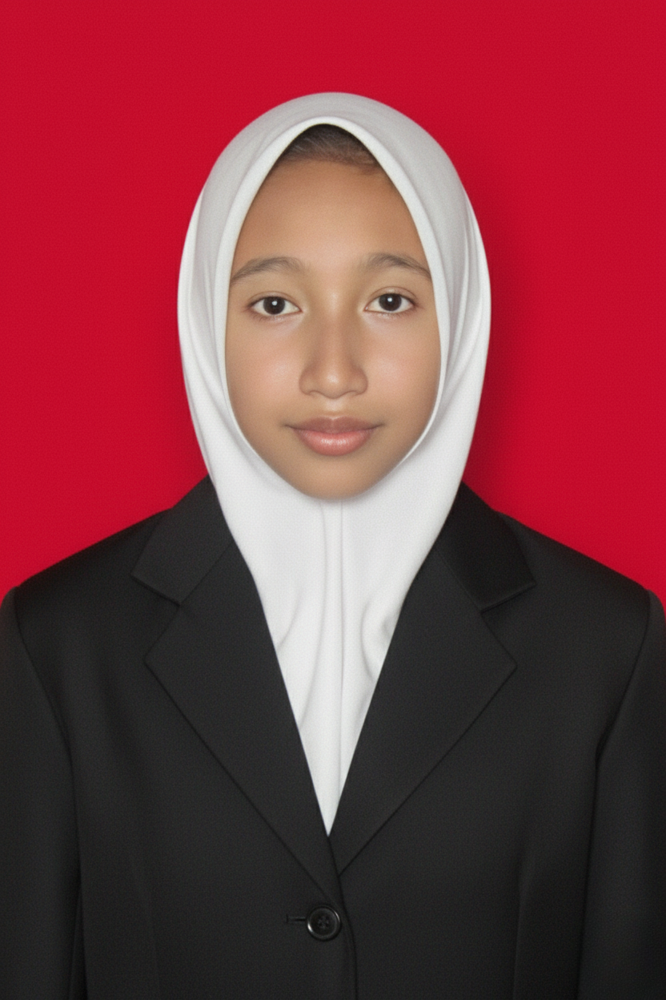

UKM TESSA
Divisi Hual (Hubungan Antar Wilayah), 2025 - 2026
Bertugas di divisi Hual, menjembatani komunikasi dan koordinasi dengan anggota dari berbagai wilayah serta membantu menjaga kekompakan antar anggota.
Mahasiswa Teknologi Informasi UIN Ar-Raniry angkatan 2024 yang menyukai desain, mulai dari desain website sampai poster. Aku juga tertarik pada dunia data dan riset lapangan.

Desain & DataMahasiswa TITentang Saya
Halo, aku Suci Wati, mahasiswa S1 Teknologi Informasi UIN Ar-Raniry asal Aceh Singkil. Sejak tahun 2024 aku menekuni dunia teknologi informasi di bangku kuliah, dan di sela-sela itu aku jatuh cinta pada desain, mulai dari membuat tampilan website sampai poster. Bagiku, desain adalah cara paling menyenangkan untuk mengubah ide menjadi sesuatu yang bisa dilihat dan dinikmati orang lain.
Selain desain, aku juga tertarik pada dunia data dan riset lapangan karena aku senang mencari tahu dan memahami situasi langsung di lapangan. Di kampus aku aktif di UKM TESSA pada divisi Hual, dan sejak SMP aku sudah akrab dengan kegiatan Pramuka. Saat waktu luang, aku suka berenang dan mendengarkan musik.
Pendidikan
Pendidikan Dasar
Menempuh pendidikan dasar di Gunung Meriah.
Pendidikan Menengah Pertama
Aktif mengikuti kegiatan Pramuka selama bersekolah.
Jurusan IPA
Menempuh pendidikan menengah atas di jurusan IPA dan lulus pada tahun 2024.
S1 Teknologi Informasi
Semester 5 dengan IPK 3.72. Mendalami teknologi informasi dengan ketertarikan pada desain, data, dan riset lapangan.
Pengalaman
Divisi Hual (Hubungan Antar Wilayah), 2025 - 2026
Bertugas di divisi Hual, menjembatani komunikasi dan koordinasi dengan anggota dari berbagai wilayah serta membantu menjaga kekompakan antar anggota.
Anggota aktif, SMP Negeri 1 Gunung Meriah
Aktif mengikuti kegiatan Pramuka dan belajar kerja sama, disiplin, serta kemandirian.
Peserta bersama tim
Berkolaborasi dengan tim untuk merancang tampilan aplikasi yang mudah digunakan dan enak dilihat, mulai dari memahami kebutuhan pengguna sampai menyusun prototipe.
Website CV online yang dibuat dengan HTML dan CSS murni tanpa framework, berisi profil, pendidikan, pengalaman, dan skill.
Skill & Hobi
Kontak
Tertarik bekerja sama atau sekadar ingin berkenalan? Hubungi aku lewat salah satu kontak di samping.
Kirim Email ✉